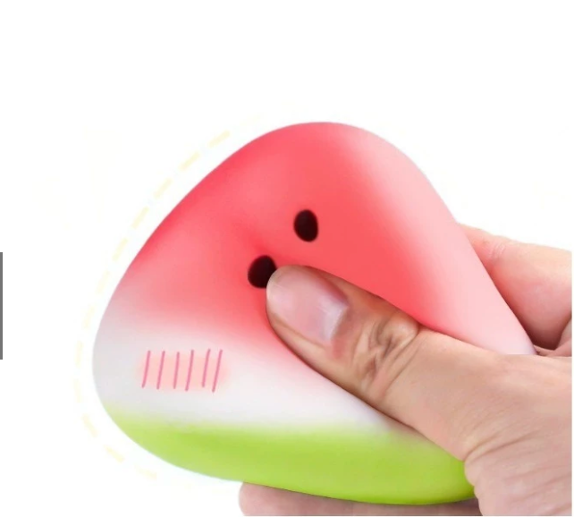
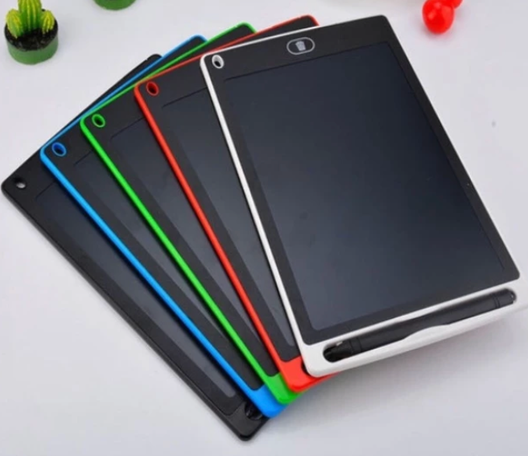

Threshold
Independent userWhat your child can do
Understand main points of lessons.
In school
Follows most lessons; misses nuance.
Cambridge PETIELTS ≈ 4.0–5.0
Tokens, type, components and rules behind every page of site-v2. All examples below render with the live stylesheet css/main.css, compiled from scss/, so this page stays in sync with the site.
Purple is the brand. Gold is the accent for eyebrows, labels and the primary CTA on purple. Ivory neutrals carry the page; white is reserved for cards.
--purple · #5D1C61--purple-700 · #4A1750--purple-900 · #320D37--purple-tint · #F3EAF4--purple-line · #E4D2E6--gold · #AF863A--gold-soft · #C7A659--gold-tint · #F4ECDC--ivory · #FBF7F0--ivory-2 · #F5EDE0--paper · #FFFFFF--ink · #2B2530--ink-soft · #6A6470--ink-faint · #938D9B--line · #E9E0D1--line-strong · #DBCDB4| Role | Token | Where |
|---|---|---|
| Section H2 | --purple | Every section heading on ivory |
| Body text | --ink / --ink-soft | Paragraphs / secondary copy, leads |
| Eyebrow, labels | --accent (= gold) | Uppercase kicker above titles, card labels |
| Section backgrounds | --ivory ↔ --ivory-2 (.bg-ivory2) | Alternate to separate sections — never two of the same in a row |
| Dark bands | --purple (.bg-purple) | CTA band, scorecard, hero overlay; text white / #EADFEC |
Two families. AvenirNextLTPro (fallback Nunito Sans) for headings, nav, buttons and labels — weights 700–900. Frank Ruhl Libre for body copy — weight 400.
Aa Bb Cc 123
AvenirNextLTPro → Nunito Sans · 600 / 700 / 800 / 900
Aa Bb Cc 123
Frank Ruhl Libre · 400 / 500 / 700
| Style | Sample | Size · weight · line-height |
|---|---|---|
Hero H1 (home) | Premium English | clamp(…,~70px) · 900 · 1.03 |
Hero H1 (page) | Page title | ~54px · 900 · 1.05 · balance |
h2 / .h2 | Section heading | clamp(2rem,3.6vw,3rem) · 800 |
h3 / .h3 | Card or sub-heading | clamp(1.3rem,1.9vw,1.6rem) · 700 · 1.18 |
h4 (label) | What parents notice | .68–.72rem · 800 · +.14em · uppercase |
.lead | Intro paragraph under a heading. | clamp(1.12rem,1.5vw,1.35rem) · 400 · 1.6 |
body / p | Body copy for paragraphs, max 60–72ch. | 1rem (17px) · 400 · 1.65 |
small / note | Helper text, captions, notes | .86–.92rem · 400 |
.eyebrow | Spark Parent Center | .74rem · 700 · uppercase · gold + star |
One container, one section rhythm. Everything sits inside .container.
| Token | Value | Visual |
|---|---|---|
--container | 1180px max width | |
--gutter | clamp(20px, 5vw, 48px) | |
--section-y | clamp(72px, 9vw, 132px) — .section | |
.section--tight | ≈ half of section-y | |
| Card padding | 22–30px · clamp(20px,2.4vw,30px) | |
| Grid gap | 16–28px · clamp(16px,2vw,24px) | |
| Heading → content | 28–48px · clamp(28px,3vw,40px) |
--r-sm · 8px--r · 14px--r-lg · 22px (cards)999px (pills, buttons)--shadow-sm--shadow--shadow-purple1px --line (default card)Real Spark photography only, stored in assets/img/. Fixed ratios + object-fit:cover.

4:3 · content / split · max 460px tall
3:4 · portrait1:1 · team / prizePill shape, Avenir 700. One primary action per section. Min height 44px.
.btn + .btn-primary | .btn-ghost | .btn-gold | .btn-link | .btn-onpurple · size .btn-sm | .btn-lg.sec-head — H2 + lead. Add .center to center.
.eyebrow · .sec-head(.center) · .title-hair + hr.rule-gold · ul.chipsHome: full-bleed video/photo, H1 ~70px/900, gold tagline. Sub-pages: .hero--page, H1 ~54px, eyebrow + lead, overlay for contrast, followed by breadcrumb bar.
section.hero.hero--page(.center) > .hero-bg img + .hero-overlay + .container .hero-inner .hero-copy
“In short” key-takeaways placed right after the hero on long guides. 3–4 bullets.
.info-grid(.cols-3|.cols-4) > .info-cardRead complex texts and produce detailed written responses.
Technical vocabulary and explaining ideas clearly.
nav.hub-grid > a.hub-card(.has-img)Two columns aligned top; add .rev to flip, .tall on media for portrait. Stacks at 860px.
Copy column, max 60ch per line. Supports h4 labels, lists and chips.

.split(.rev) > .split-copy .copy + .split-media(.tall) img
For parallel content (levels, schools, metrics). First tab active. Panel can be a split.
Panel one — sounds, blending, decoding.
Panel two — CEFR A1 → B2.
Panel three — Band 4.5 → 9.
.tabs > .tab-list button[data-tab] + .tab-panels .tab-panel[data-tab-panel](.split)
Native <details>. .cols-2 for long lists; numbered variant .crit-list.
A measure comparing reading ability to typical expectations for an age group.
Continuously.
Used for factors / criteria lists.
.verdict-grid(.cols-3) > .v.v--minus | .v--plus | .v--yesReading, writing, vocabulary.
Built from assessment data.
Parents receive clear feedback.
ol.step-grid(.cols-1) > li > span.sn + div (h3, p, ul.chips, p.note).roadmap > .rm-track > .rm-step — for ≤4 short stagesLearning to read.
Functional English.
Band mastery.
.roadmap.rm-v — for long stage contentTeachers identify strengths and gaps; routines begin.
Strategies applied more independently.
.cefr > .cefr-item(.b|.c)Understand main points of lessons.
Follows most lessons; misses nuance.
| CEFR | School year | IELTS |
|---|---|---|
| A2 to B1 | Year 3 to 6 | 4.0 to 5.0 |
| B1 to B2 | Year 6 to 9 | 5.0 to 6.5 |
.tbl-wrap > table.tbl — horizontal scroll under 640px
A centered closing statement inside a section.
.scorecard · .q-card + ol.q-list · .inline-cta
How the exam works and preparation timelines.
Best forSecondary students & adults
Download

.res-grid > .res-card · .store-grid > .prize (1:1 image)
Fits one screen: 2-column compact grid, required marked *, chips for multi-select, single submit.
One short step.
.form-card > form > .form-grid.compact > .field(.full|.invalid) label + input + .err · .chip-group
Every content page ends with Related pages + purple CTA band.
section.section.assess.bg-purple.cta-band · .promo-band--img (home) · .related .rel-links
Source lives in scss/: abstracts → base (tokens, reset, typography) → layout → components (one file each) → sections (page-specific) → utilities. Build with npx sass scss/main.scss css/main.css.
| Component | Public variables |
|---|---|
Headings h1–h4 | --heading-color, --subheading-color |
.lead | --lead-color, --lead-size, --lead-lh, --lead-weight |
.eyebrow | --eyebrow-color |
.spark (icon) | --spark-color, --spark-size |
.chip | --chip-bg, --chip-fg, --chip-border, --chip-shadow, --chip-size, --chip-weight, --chip-blur, --chip-spark-color · .chip--filter |
.trust-chips | --trust-chips-justify |
.btn-primary | --btn-bg, --btn-fg, --btn-border, --btn-hover-bg |
.btn-ghost | --btn-ghost-fg, --btn-ghost-border, --btn-ghost-hover-fg, --btn-ghost-hover-bg, --btn-ghost-hover-border |
.container | --container-max, --container-position, --container-z |
.brand | --brand-h, --logo-white, --logo-purple |
.split-media | --split-media-position, --split-img-ratio, --split-img-maxh, --split-img-maxh-sm |
<div style="--btn-ghost-fg:#fff; --btn-ghost-border:rgba(255,255,255,.45)"><a class="btn btn-ghost">…</a></div>Full list in UX-UI-STANDARDS.md. Key do / don't:
text-wrap:balance on titles.